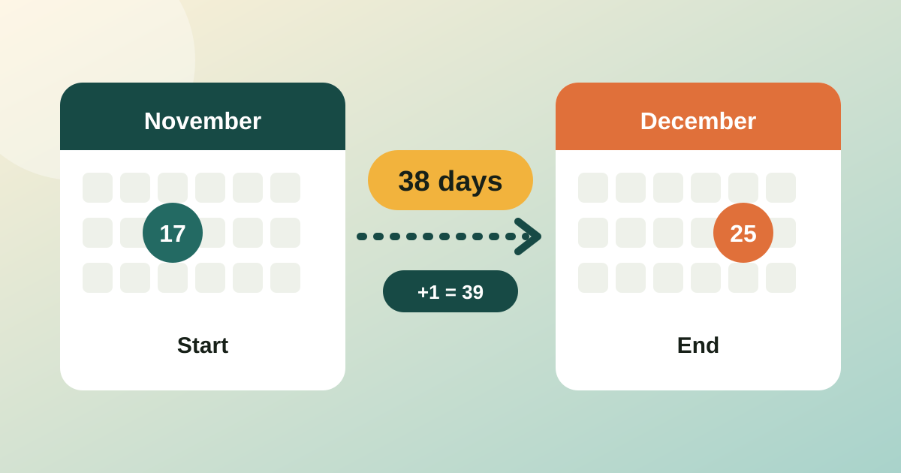

How long do opened foods last in the fridge? A shelf-life chart
The date on the label is for an unopened pack. Once you open it the clock changes. Here is a chart of how long common foods keep in the fridge after opening.
Read article
To count the days between two dates, subtract the start date from the end date. From 17 November to 25 December 2026 that is 38 days. If both the first and the last day should count, as with a holiday or a course, add 1. Nearly every date mistake is this one: being off by a single day.
| You want | Count | 17 Nov to 25 Dec 2026 |
|---|---|---|
| Days until an event (a countdown) | End − start | 38 days |
| Days left until a deadline or expiry | End − start | 38 days |
| Length of a stay, course or leave, both days included | End − start + 1 | 39 days |
| Nights in a hotel | End − start | 38 nights |
| Working days, both days included | Weekdays only | 29 days (28 if 25 Dec is a holiday) |
A simple check: from today to tomorrow is 1 day until, but "today and tomorrow" is 2 days. If your answer for that small case looks wrong, the method is wrong.
The same method gives 45 days from 17 November 2026 to 1 January 2027. For anything longer than a couple of months, a calculator is quicker and less error-prone.
Divide by 7 for weeks and keep the remainder as days: 38 days is 5 weeks and 3 days. "In 90 days" from Tuesday 17 November 2026 lands on Monday 15 February 2027, because 90 days is 12 weeks and 6 days, and six days on from a Tuesday is a Monday.
| What | Excel and Google Sheets |
|---|---|
| Days between (exclusive) | =B2-A2 or =DAYS(B2,A2) |
| Days between, both ends counted | =B2-A2+1 |
| Days until a date from today | =B2-TODAY() |
| Working days, both ends counted | =NETWORKDAYS(A2,B2,holidays) |
| Date N days from now | =TODAY()+90 |
Format the result cell as a number, not a date, or 38 shows up as a date in early 1900.
The off-by-one mistake costs the most with expiry dates and renewals: a passport that has to be valid for 6 months after you arrive, a warranty that ends on a date, or food that is safe up to its use by date. See passport, ID and licence expiry reminders and best before vs use by for the rules behind those dates.
The free days until calculator gives the days, weeks and weekday for any date, with no maths. To keep a running countdown for things that run out, Days Until tracks expiry and renewal dates for food, medicine, documents and subscriptions and reminds you 30, 7 and 1 day before, so the count is always done for you. More guides are in the home and expiry tracking section.
Subtract the earlier date from the later one. From 17 November to 25 December 2026 that is 38 days: 13 days left in November plus 25 in December. This is the number of days you wait, and it does not count the start day.
Add 1 when both days count, for example the length of a holiday, a hotel stay counted in days, or a course that runs from Monday to Friday inclusive. A countdown, a deadline or an age in days does not add 1.
A leap year adds 29 February, so any span that crosses it is one day longer. 2028 is the next leap year: 1 February to 1 March 2028 is 29 days, while in 2027 it is 28.
Put the dates in two cells and use =B2-A2 or =DAYS(B2,A2). For working days use =NETWORKDAYS(A2,B2), which counts both ends and skips weekends, and add a holiday range as a third argument.
The date on the label is for an unopened pack. Once you open it the clock changes. Here is a chart of how long common foods keep in the fridge after opening.
Read articleAn expired passport is not found out at home, it is found out at the airport. Here is when to renew each document and how to get a reminder long before it matters.
Read articleUse by is a safety date and best before is a quality date. Knowing which is which, and when a product is opened, saves food and money without taking risks.
Read articlePublished: . More in Home & expiry tracking or all articles.